המבחן ביום ד', 4.11.2026
בונוס: מי שיגיש את דפי החזרה פתורים במלואם ביום המבחן יקבל בונוס נקודות למבחן.
שאלות המסומנות ב־★ הן שאלות אתגר.
בכיתה 14 בנים ו־21 בנות. כתבו את היחס בין מספר הבנים למספר הבנות, בצורה מצומצמת.
בגינה 45 ורדים ו־30 חמניות. כתבו את היחס בין מספר החמניות למספר הוורדים, בצורה מצומצמת.
בארגז 24 תפוחים ו־36 אגסים. מהו היחס בין מספר התפוחים למספר כל הפירות בארגז?
במקלט לבעלי חיים היחס בין מספר החתולים למספר הכלבים הוא 2:7. איזה משפט נכון?
(1) במקלט יש בדיוק 2 חתולים.
(2) על כל 2 חתולים יש במקלט 7 כלבים.
(3) החתולים הם 2/7 מכלל בעלי החיים.
(4) במקלט יש יותר חתולים מכלבים.
במקלט מהשאלה הקודמת יש 35 כלבים. כמה חתולים יש בו?
חלקו 480 ₪ בין שני אחים ביחס 3:5. כמה קיבל כל אחד?
חלקו 630 ₪ בין שלושה ילדים ביחס 2:3:4. כמה קיבל כל אחד?
במבחן של 30 שאלות, היחס בין מספר התשובות הנכונות למספר הטעויות של מיכל הוא 4:1.
(1) על כמה שאלות ענתה מיכל נכון?
(2) אילו מיכל הייתה מתקנת 3 טעויות, מה היה היחס החדש? כתבו בצורה מצומצמת.
השלימו כך שיתקבלו יחסים השקולים ל־3:4:
(1) 12 : ___
(2) ___ : 20
(3) 1.5 : ___
כתבו יחס השקול ליחס 5:8, שבו המספר השני הוא 40.
בחוג 40 משתתפים, והיחס בין מספר הבנים למספר הבנות הוא 3:5. הצטרפו לחוג 5 בנים. מה היחס החדש בין הבנים לבנות?
היחס בין גיל אבא לגיל בנו הוא 4:1, וסכום הגילים שלהם הוא 50. מה גיל כל אחד?
בשקית סוכריות אדומות וירוקות ביחס 5:3. יש בשקית 12 סוכריות אדומות יותר מירוקות. כמה סוכריות יש בשקית?
במתכון היחס בין כמות הקמח לכמות הסוכר הוא 5:2. לנועה יש 750 גרם קמח ו־400 גרם סוכר, והיא משתמשת בכל הקמח. כמה סוכר יישאר לה?
מצאו את x:
מצאו את x:
מצאו את x:
מצאו את x:
מצאו את x:
מצאו את x:
מצאו את x:
האם זו פרופורציה? נמקו.
(1) 3 : 5 = 9 : 15
(2) 4 : 7 = 8 : 15
השלימו את הפרופורציה: 6 : 9 = 10 : ___
5 מחברות עולות 23.5 ₪. כמה יעלו 8 מחברות? כתבו פרופורציה ופתרו.
מכונה ממלאת 120 בקבוקים ב־8 דקות. כמה בקבוקים תמלא ב־30 דקות?
במתכון ל־6 סועדים צריך 450 גרם אורז. כמה אורז צריך ל־15 סועדים?
4 כרטיסים להצגה עולים 74 ₪. כמה כרטיסים לכל היותר אפשר לקנות ב־200 ₪? נמקו.
7 חולצות עולות 245 ₪. לדני יש 380 ₪. כמה חולצות לכל היותר הוא יכול לקנות, וכמה כסף יישאר לו?
במפה בקנה מידה 1:20,000 המרחק בין שני בתי ספר הוא 7 ס"מ. מהו המרחק במציאות, בק"מ?
במפה בקנה מידה 1:200,000 המרחק בין שתי ערים הוא 3.5 ס"מ. מהו המרחק במציאות, בק"מ?
המרחק במציאות בין שני כפרים הוא 6 ק"מ. מה המרחק ביניהם על מפה בקנה מידה 1:40,000?
המרחק במציאות בין שתי תחנות הוא 3.5 ק"מ. מה המרחק ביניהן על מפה בקנה מידה 1:25,000?
בתוכנית של בית, חדר שאורכו 4 מטרים משורטט כקו באורך 8 ס"מ. מהו קנה המידה?
במפה, מרחק של 2 ק"מ במציאות משורטט כקו באורך 5 ס"מ. מהו קנה המידה של המפה?
במפה בקנה מידה 1:30,000 המרחק בין שני צמתים הוא 8.5 ס"מ. מהו המרחק במציאות, במטרים?
בתוכנית בקנה מידה 1:100 חדר משורטט כמלבן במידות 4.2 ס"מ על 3.5 ס"מ. מהן מידות החדר במציאות, במטרים?
במפה בקנה מידה 1:50,000 המרחק בין שתי נקודות הוא 8 ס"מ. מה יהיה המרחק ביניהן על מפה בקנה מידה 1:200,000?
דגם של מטוס בנוי בקנה מידה 1:72. אורך הדגם הוא 25 ס"מ. מהו אורך המטוס האמיתי, במטרים?
פתרו:
פתרו:
פתרו:
פתרו:
פתרו:
פתרו:
פתרו:
פתרו:
פתרו:
דני פתר את המשוואה 3(x−2)=x+4 וכתב: 3x−2=x+4, ולכן x=3. מצאו את הטעות ופתרו נכון.
כרטיס לקולנוע למבוגר עולה x ₪, וכרטיס לילד זול ממנו ב־5 ₪.
(1) כתבו ביטוי למחיר כרטיס לילד.
(2) משפחה קנתה 3 כרטיסים למבוגרים ו־2 כרטיסים לילדים ושילמה 140 ₪. כתבו משוואה ומצאו את מחירי הכרטיסים.
מחברת עולה x ₪, ועט זול ממנה ב־2 ₪. יעל קנתה 5 מחברות ו־3 עטים ושילמה 50 ₪. כמה עולה מחברת וכמה עולה עט?
ספר יקר ממחברת ב־12 ₪. רון קנה 2 ספרים ו־4 מחברות ושילם 72 ₪. מה מחיר מחברת ומה מחיר ספר?
אורך של מלבן גדול ב־4 ס"מ מהרוחב שלו, וההיקף שלו 40 ס"מ. מצאו את אורך המלבן ואת רוחבו.
גיל אבא גדול פי 3 מגיל בנו. בעוד 10 שנים סכום הגילים שלהם יהיה 80. בני כמה הם היום?
בשרטוט a ∥ b. כתבו מה סוג כל זוג זוויות (צמודות / קודקודיות / מתאימות / מתחלפות / חד־צדדיות):
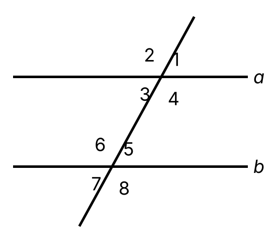
(1) 2 ו־6
(2) 4 ו־6
(3) 3 ו־6
(4) 2 ו־4
(5) 1 ו־4
(6) 3 ו־7
בשרטוט a ∥ b וזווית 1 שווה 72°. מספרו את שאר הזוויות כמו בשאלה הקודמת, ומצאו את כולן. נמקו כל תשובה.
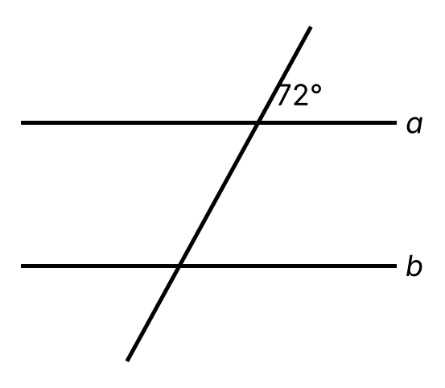
בשרטוט שני ישרים נחתכים. מצאו את x ואת כל ארבע הזוויות. נמקו.
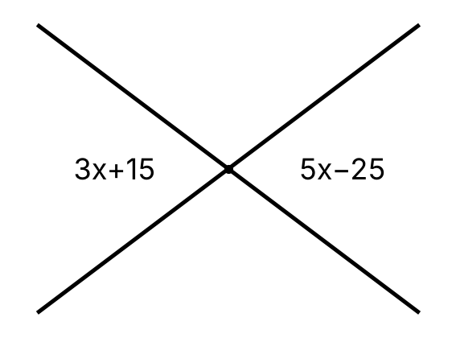
בשרטוט שני ישרים נחתכים. מצאו את x ואת שתי הזוויות המסומנות. נמקו.
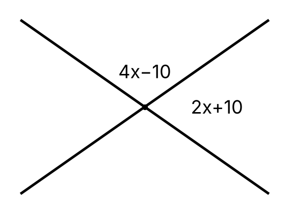
בשרטוט שני ישרים נחתכים, ואחת הזוויות היא 38°. מצאו את α ואת β וכתבו את סוג הזוויות.
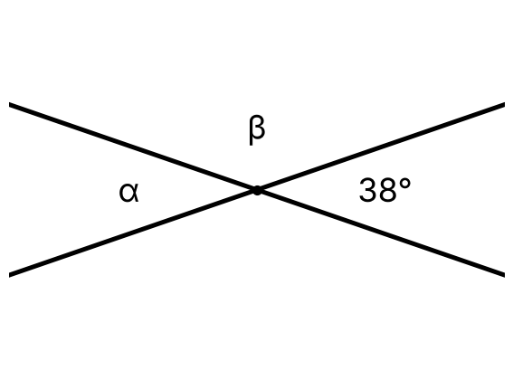
בשרטוט שלוש זוויות על ישר אחד. מצאו את x ואת שלוש הזוויות.
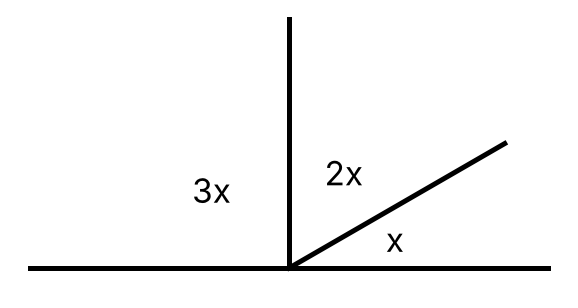
בשרטוט a ∥ b. מצאו את x ואת גודל הזוויות. נמקו.
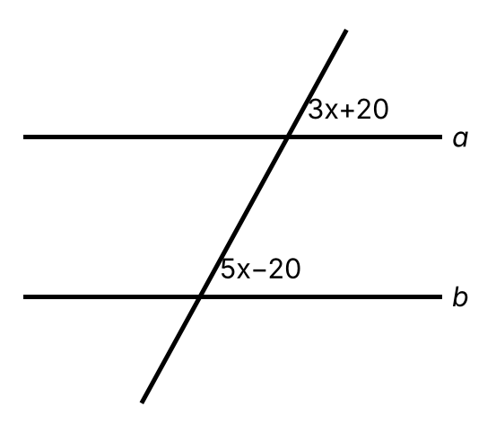
בשרטוט a ∥ b. מצאו את x ואת גודל הזוויות. נמקו.
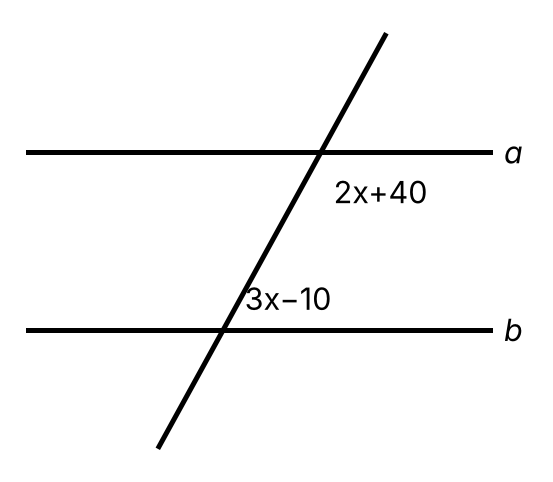
בשרטוט a ∥ b. מצאו את x ואת גודל הזוויות. נמקו.
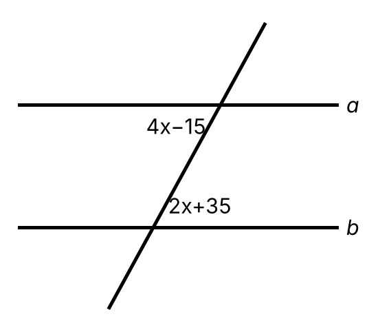
בשרטוט הישרים m ו־n נחתכים על ידי ישר שלישי. האם m ∥ n? נמקו.
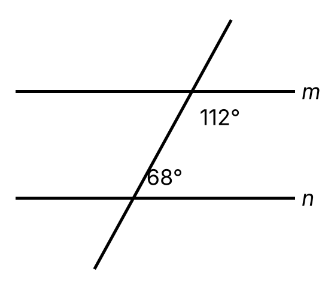
בשרטוט הישרים m ו־n נחתכים על ידי ישר שלישי. האם m ∥ n? נמקו.
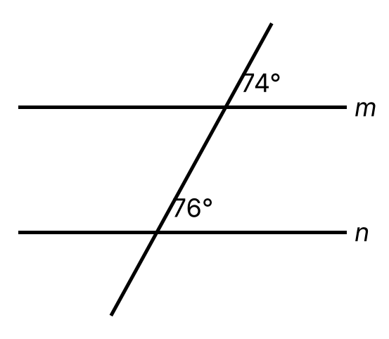
בשרטוט הישרים m ו־n נחתכים על ידי ישר שלישי. תלמיד טוען שהישרים מקבילים. האם הוא צודק? נמקו.
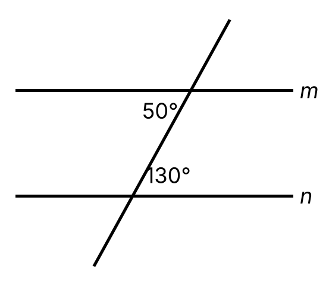
האם ייתכן ששתי זוויות צמודות יהיו שתיהן חדות? נמקו.
בכל משולש ישר־זווית, כתבו איזו צלע היא היתר:
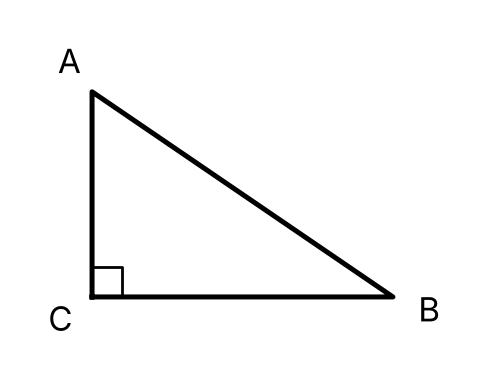 |
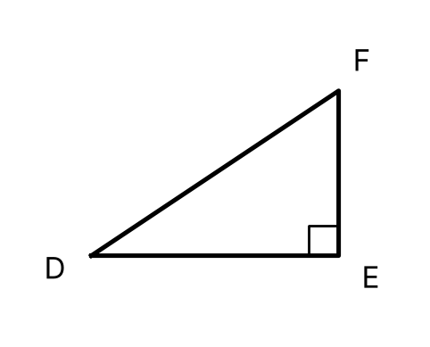 |
|---|
מצאו את אורך היתר AB.
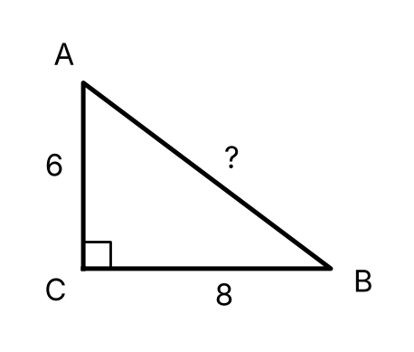
מצאו את x.
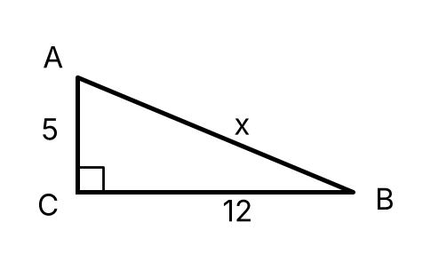
מצאו את x (הניצב).
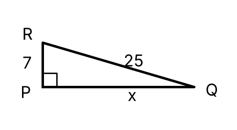
במשולש ישר־זווית היתר הוא 17 ס"מ ואחד הניצבים 15 ס"מ. מצאו את הניצב השני.
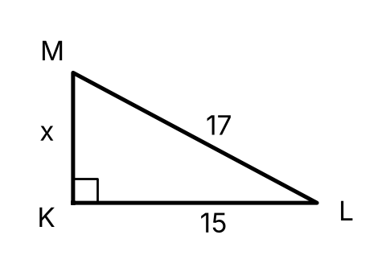
במשולש ישר־זווית הניצבים הם 1.2 מ' ו־0.9 מ'. מצאו את היתר.
עמוד אנכי שגובהו 12 מ' מחובר בכבל מתוח לנקודה על הקרקע, במרחק 5 מ' מבסיס העמוד. מה אורך הכבל?
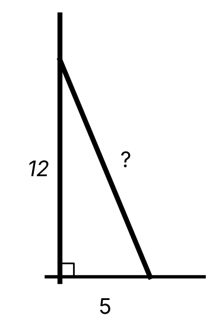
סולם שאורכו 3.4 מ' נשען על קיר אנכי. רגל הסולם במרחק 1.6 מ' מהקיר.
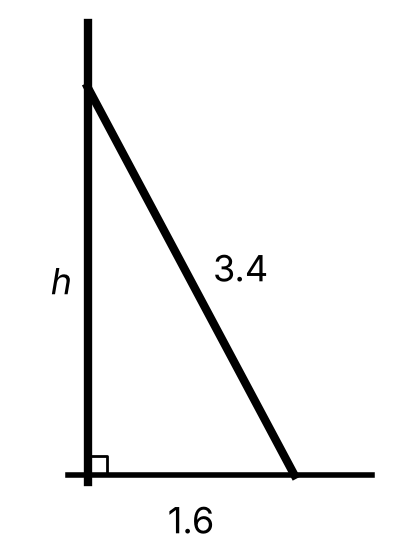
(1) לאיזה גובה מגיע ראש הסולם?
(2) מזיזים את רגל הסולם כך שהיא במרחק 3 מ' מהקיר. לאיזה גובה יגיע ראש הסולם? בכמה ס"מ הוא ירד?
בשרטוט משולש ABC ישר־זווית ב־B, ומשולש ACD ישר־זווית ב־C. מצאו את AC, את AD ואת היקף המרובע ABCD.
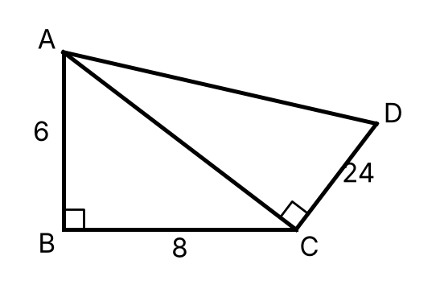